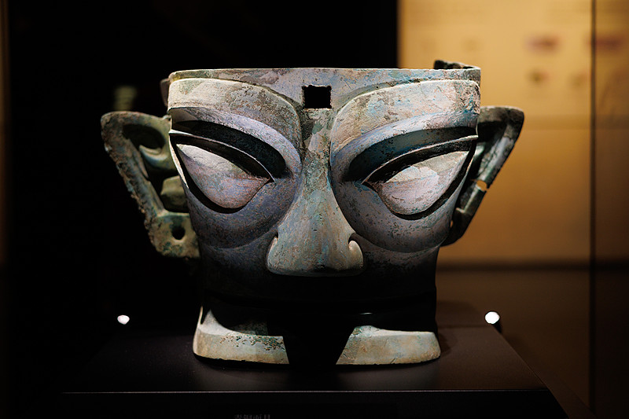
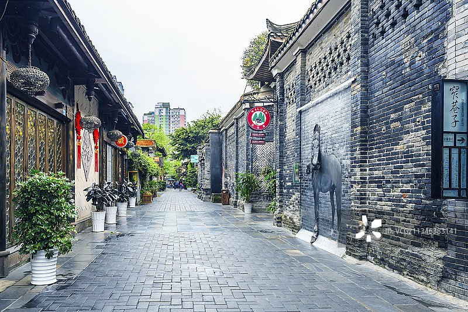
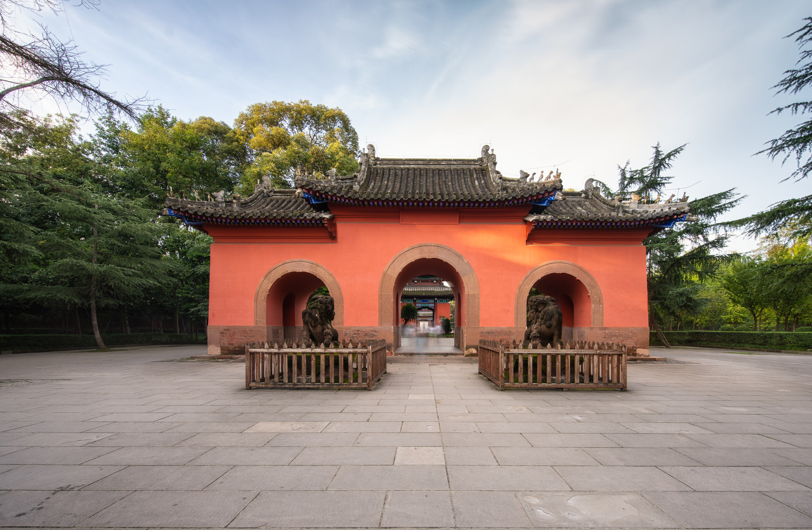
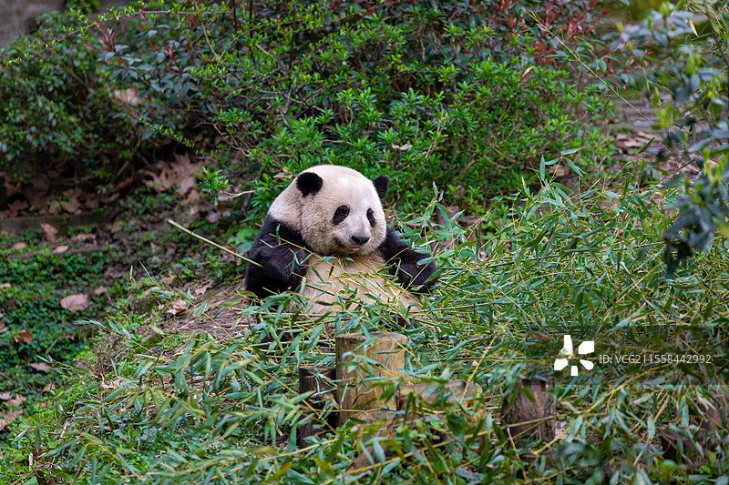
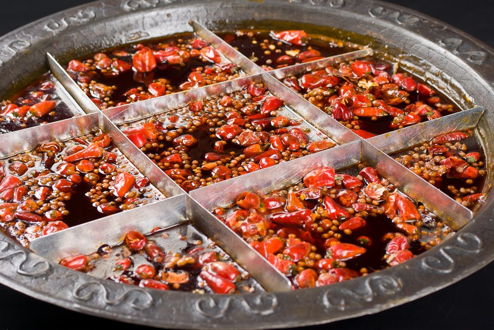
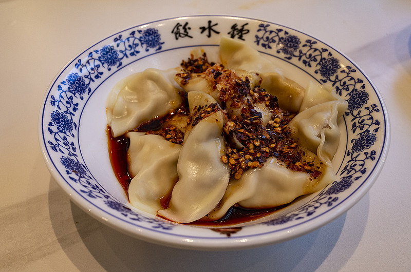

Overview
成都，别称蓉城，地处四川盆地西部，是四川省省会，有着2300多年的建城史
成都，一座被时光温柔以待的城市。这里既有三千年的厚重历史，又有最市井的烟火气息。茶馆里的盖碗茶，街巷中的火锅香，熊猫憨态的可掬模样，构成了成都最动人的底色。
作为古蜀文明的发祥地，成都曾是天府之国的核心。李冰父子修建的都江堰，让这片土地两千年来旱涝保收，物产丰饶。而今，它依然是中国最具幸福感的城市之一。
History
从古蜀文明到现代蓉城，时光在这里沉淀出独特的韵味
公元前11世纪
蚕丛、鱼凫开明氏相继统治蜀地，三星堆、金沙遗址见证了一个神秘而辉煌的青铜文明。
公元前256年
李冰父子主持修建都江堰水利工程，使成都平原成为水旱从人不知饥馑的天府之国。
三国时期
刘备建都成都，诸葛亮治蜀，武侯祠至今仍是后人凭吊这段英雄岁月的圣地。
唐宋时期
成都成为全国重要的商业都市，扬一益二之说流传千年。杜甫草堂、万里桥畔，诗圣留下了无数千古名篇。
当代
作为西南中心城市，成都既保留了慢生活的闲适，又展现出国际化大都市的蓬勃活力，入选中国最具幸福感城市多年。
Antiquities
从三星堆到金沙，从诗圣草堂到都江堰，这些坐标串起古蜀文明最动人的时光走廊

纵目面具与青铜神树，展开一个充满想象力的古蜀世界。
金沙祭祀区出土的太阳神鸟金饰，被誉为中国文化遗产标志，象征古蜀人对光明的礼赞。
茅屋为秋风所破歌之地，浣花溪水千年不息。
无坝引水的古老智慧，两千多年仍润泽天府。
“窗含西岭千秋雪，门泊东吴万里船。”
Landmarks
走进成都的经典之地，感受这座城市的历史底蕴与现代魅力

宽巷子、窄巷子、井巷子三条老街，承载着成都老城的记忆。青砖黛瓦间，既有传统川西民居的韵味，也有新潮文创的空间。
紧邻武侯祠，夜晚的锦里红灯笼高挂，是体验成都夜生活和地道小吃的绝佳去处。

中国唯一的一座君臣合祀祠庙，纪念诸葛亮与刘备，是了解三国历史的文化圣地。
两千多年的水利工程奇迹，至今仍灌溉着成都平原千万亩良田，是世界文化遗产。

近距离观赏国宝大熊猫的最佳去处，萌态可掬的熊猫是成都最生动的名片。
Cuisine
舌尖上的成都，麻辣鲜香中藏着这座城市最热烈的人间烟火

蜀地麻辣 · 千年传承
红汤翻滚，花椒与辣椒在锅中共舞。毛肚、黄喉、鸭肠七上八下，蘸上香油蒜泥，是成都人最酣畅淋漓的饮食享受。
街头名食 · 百年经典
细面如丝，浇上秘制红油与芽菜臊子，麻辣鲜香在舌尖绽放。挑担叫卖的街头智慧，成就了这道成都经典。

西御街 · 老字号
纯肉馅的水饺，不配汤而配红油酱。皮薄馅嫩，汁水丰盈，甜辣交织的风味独属于成都。
街头小吃 · 老少皆宜
糯米团裹上红糖与芝麻，在油锅中翻滚至金黄。外酥里糯，甜而不腻，是成都街头最温暖的甜蜜记忆。
Heritage
匠心传承，千年技艺在指间流淌，诉说着巴蜀大地的文化记忆
中国四大名绣之一，以软滑的绸面和细腻的针法著称。题材多为花鸟虫鱼、山水人物，针脚工整，色彩明丽，千年不绝。
变脸、吐火、滚灯，川剧绝活闻名天下。高亢的唱腔与诙谐的表演，展现了蜀地人民豪爽乐观的性格。
成都崇州道明竹编历史悠久，以细密精巧著称。一件件竹器，承载着匠人对自然的敬畏与对生活的热爱。
Tips
融入成都的节奏，像当地人一样生活
Official
以下均为各景点与文旅主管部门官方网站，可查询最新票务、展览与开放信息
成都文旅官方政务门户，发布文旅活动、政策与城市资讯。
国宝熊猫官方园区，查看开放时间、购票与最新动态。
君臣合祀的三国圣地，展览、研学与锦里民俗区资讯。
诗圣杜甫流寓成都时的故居，诗史堂与园林展览信息。
古蜀文明太阳神鸟出土地，常设展与数字云展厅。
世界遗产景区官方预订平台，门票、索道与游玩攻略。